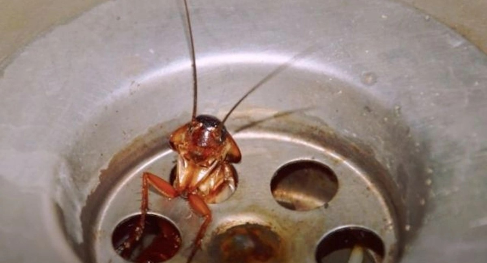

Via het riool
Op Kos zijn kakkerlakken. Veelal komen ze binnen via de riolering, of door afvoerputjes in de douche die in verbinding staan met het riool.
De riolering van Kos krioelt van de kakkerlakken. De putdeksels worden in de zomer dan ook dicht gemaakt.
Ziet u een kakkerlak lopen? Dat betekent niet automatisch dat de plek onhygiënisch is. Een effectieve methode is om de douche- of waterputjes af te dekken.